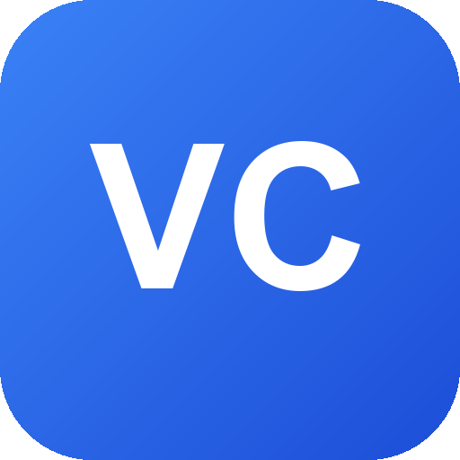
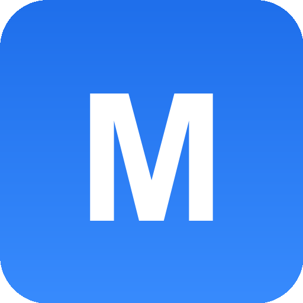
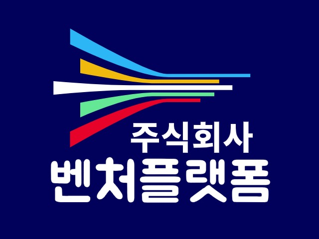
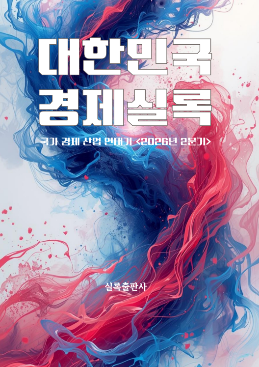
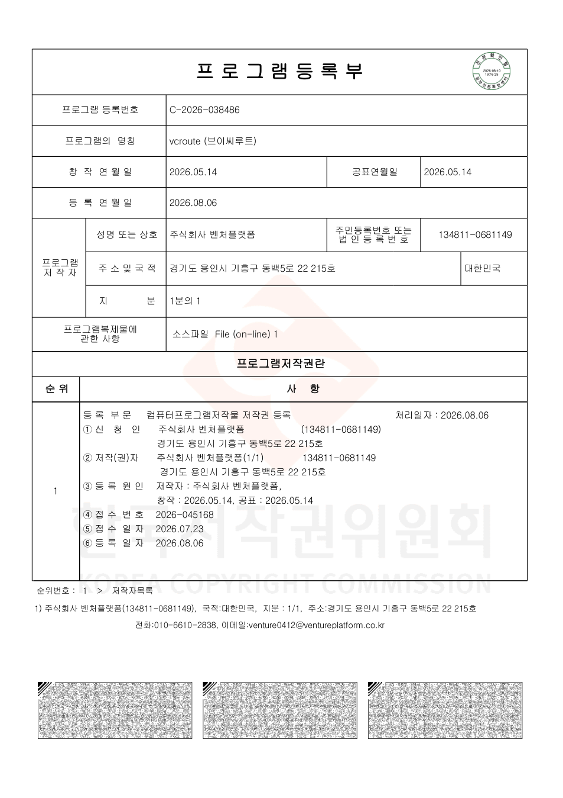
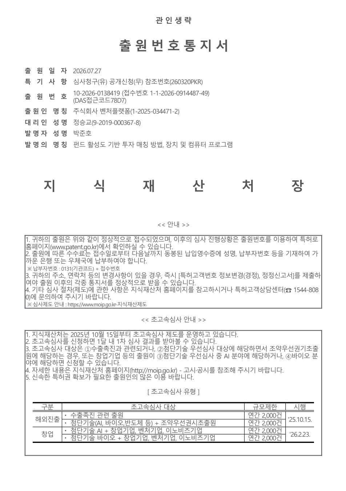
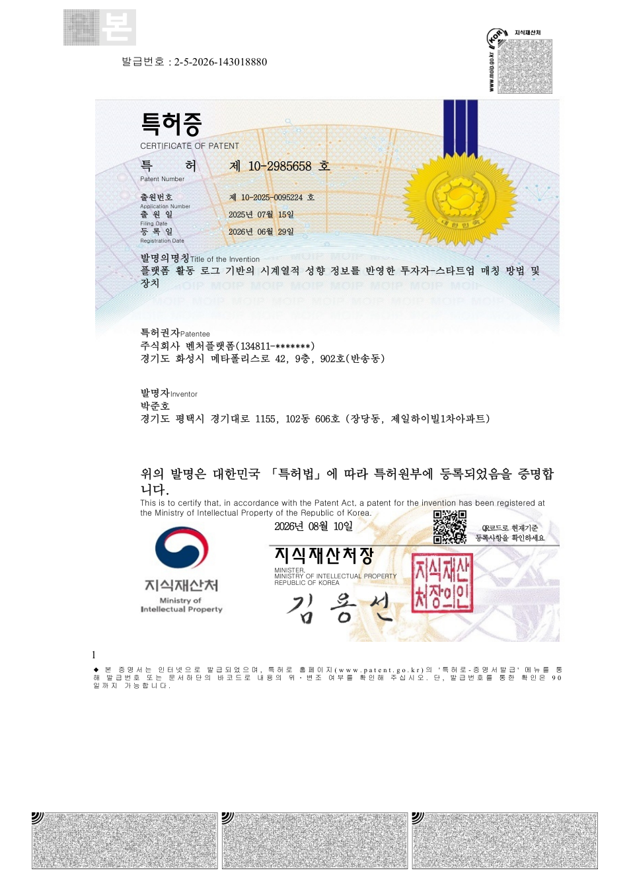
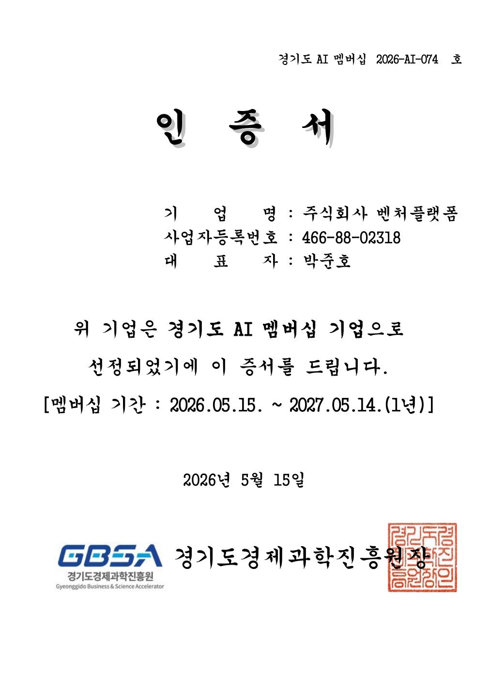
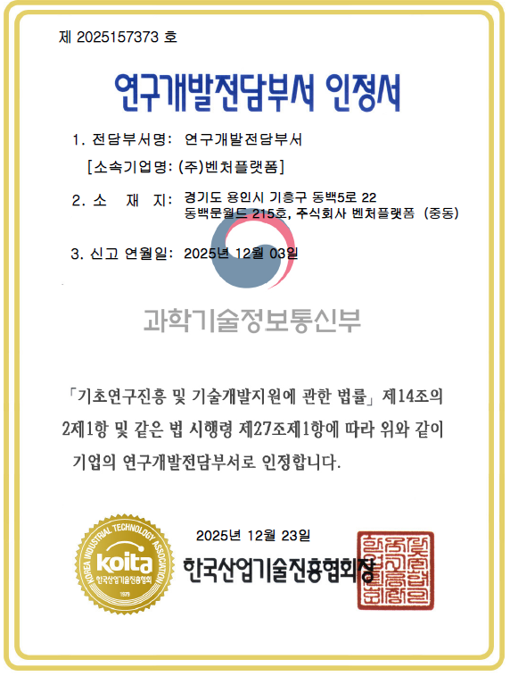
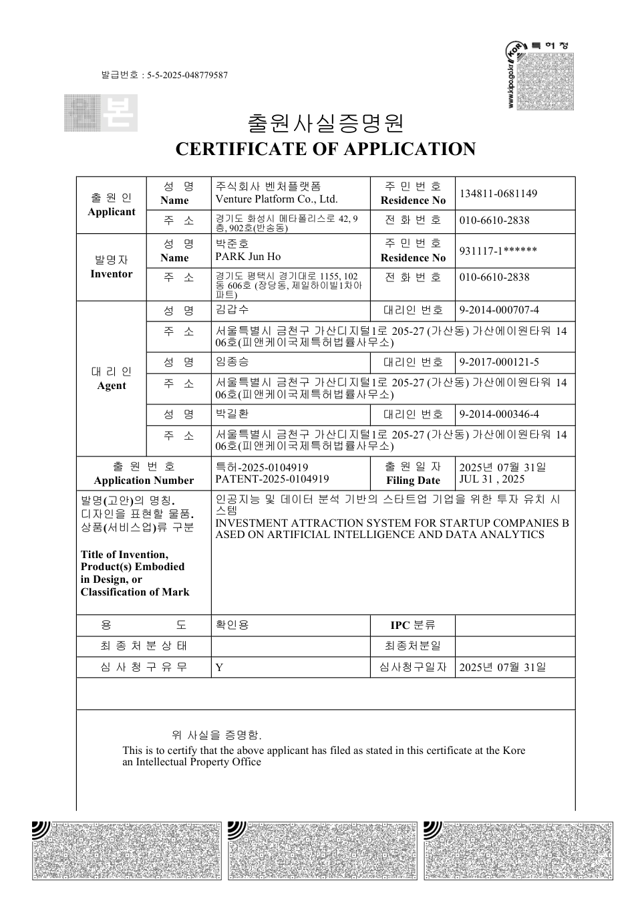

자금 여력 있는 펀드,
지금 기업 찾는 투자자.
브이씨루트가 안내합니다. 초기 스타트업과 전문 투자자를 데이터로 정밀하게 잇습니다. 최적의 투자 파트너를 30초 안에 만나보세요.
🎉 베타 기간 동안 전 서비스 무료 · 카드 등록 없이 바로 시작
매주 자동 갱신 · KVIC 공지 실시간 반영
투자자를 만나기까지,
VCroute 하나면 충분합니다
우리는 매칭에 집중합니다. 최적의 투자자를 찾아 연결하는 것까지가 VCroute의 역할. 협상과 계약은 두 당사자가 직접, 우리는 그 만남을 데이터로 앞당깁니다.
스마트 매칭
투자 단계·산업·운용 규모를 분석해 지금 투자 가능하고 가장 잘 맞는 투자처를 자동 추천합니다.
익명 티저 · IM 자동 생성
회사 정보 한 번 입력이면 AI가 익명 티저(TM)를 생성. 관심 투자자에게만 실명 IM을 선택 공개합니다.
펀드·투자자 DB
6,854개 펀드와 1,240명의 투자자 정보를 매주 자동 갱신. KVIC 공지와 모태펀드까지 한눈에.
창업자 계산기
Revenue Multiple 기반 기업가치 추정과 지분 계산기로 투자 유치 전 눈높이를 30초에 점검.
하나의 AI 심사역,
세 갈래의 ROUTE
AI 심사역 '루트'가 투자(VC-ROUTE)와 마케팅(MARKETING-ROUTE)까지, 스타트업의 성장 경로를 데이터로 안내합니다.

How it works회사 정보 한 번 입력, 3단계로 끝
회사 정보 입력
라운드·산업·지표를 한 번만 입력하면 AI가 익명 티저(TM)를 자동으로 만들어 줍니다.
익명 노출 & 매칭
회사명 없이 투자자에게 노출되고, 지금 투자 가능하고 잘 맞는 투자처가 자동 매칭됩니다.
실명 IM 선택 공개
관심을 보인 투자자에게만 실명 상세(IM)를 공개. 이후 미팅·협상은 두 분이 직접.
대시보드 하나로 끝내는 투자 준비
기업가치 · 지분, 30초에
Revenue Multiple 기반 간이 기업가치 계산과 지분 계산기로 투자 유치 전 눈높이를 빠르게 점검합니다.
익명 티저(TM) · IM 자동 생성
회사 정보 한 번 입력이면 AI가 익명 티저와 실명 IM 문서를 자동 작성. 공개 시점은 창업자가 직접 통제합니다.
6,854개 펀드, 매주 갱신
펀드 리스트와 분야별 탐색, 신규 결성 펀드, 모태펀드, 최근 KVIC 공지까지 한곳에서 확인합니다.
1,240명의 전문 투자자
VC·액셀러레이터·엔젤 등 검증된 투자자를 분야별로 살펴보고, 우리 회사와 맞는 상대를 찾습니다.
지금 투자 가능한
최적의 투자자를 자동으로
국내 VC·액셀러레이터·정부 펀드 5,000곳 이상의 데이터에서, 투자 단계·산업·운용 규모를 분석해 우리와 가장 잘 맞는 곳을 골라 알려드립니다. 만남까지가 우리 역할, 그 다음은 두 분이 직접.
- 투자 단계·산업·지역 맞춤 필터링
- 매칭 적합도 스코어 기반 우선순위
- 지금 투자 가능한 활성 펀드 우선 노출
회사명 없이 먼저
투자자 반응을 확인하세요
회사 정보를 한 번 입력하면 AI가 익명 티저(TM)를 자동 생성합니다. 실명 공개 없이 투자자 관심을 먼저 테스트하고, 관심을 보인 투자자에게만 실명 상세(IM)를 선택적으로 공개하세요.
- 회사명 비공개 — 안전하게 시장 반응 테스트
- TM·IM 문서를 AI가 자동 작성, 작업 부담 제로
- 실명 공개 여부는 창업자가 직접 통제
내 회사 가치·지분,
지금 얼마?
Revenue Multiple 기반 간이 기업가치 계산과 지분 계산기로, 투자 유치 후 지분 변화까지 30초 안에 참고용 결과를 확인하세요. 투자자를 만나기 전 눈높이를 맞춥니다.
- 매출 배수 기반 Pre-money 가치 범위 추정
- 투자 유치 후 창업자·투자자 지분 변화 시뮬레이션
- 참고용 결과를 30초 안에
매주 갱신되는
펀드 데이터베이스
펀드 리스트와 분야별 탐색, 신규 결성 펀드, 모태펀드, 최근 KVIC 공지까지 한곳에서 확인하세요. 지금 투자 가능한 활성 펀드를 놓치지 마세요.
- 6,854 펀드 · 활성 5,449 · 모태 1,026
- 분야별·라운드별 빠른 탐색
- 최근 KVIC 공지 실시간 반영
1,240명의
검증된 전문 투자자
VC·액셀러레이터·엔젤 등 검증된 투자자를 분야별로 살펴보고, 우리 회사와 맞는 상대를 찾으세요. 매칭과 바로 연동됩니다.
- VC · 액셀러레이터 · 엔젤 투자자
- 투자 분야·단계별 탐색
- 스마트 매칭과 자동 연동

MARKETING-ROUTE투자 다음의 성장,
마케팅까지 이어지는 경로
AI 심사역 '루트'의 데이터 역량을 마케팅 영역으로 확장합니다. 우리 회사에 맞는 마케팅 채널·파트너를 데이터로 연결하는 MARKETING-ROUTE를 준비하고 있습니다.
채널·파트너 매칭
성장 단계·업종·목표에 맞는 마케팅 채널과 실행 파트너를 데이터 기반으로 추천합니다.
성과 데이터 분석
마케팅 활동 데이터를 구조화해 무엇이 효과적인지 한눈에 파악하도록 돕습니다.
SNS 배포 자동화
제작한 콘텐츠를 여러 SNS 채널 형식에 맞춰 자동으로 배포·발행합니다. 반복 업무 없이 일관된 노출을 유지합니다.
연결에 집중
실행은 파트너가, 우리는 '가장 잘 맞는 연결'에. VC-ROUTE와 같은 매칭 철학을 이어갑니다.
모든 ROUTE를 움직이는
투자 특화 AI 심사역
'루트'는 답을 대신 생성하는 범용 AI가 아니라, 투자유치 준비의 전 과정을 책임지는 투자 특화 AI 심사역입니다. 42종의 공공데이터와 1만 건 이상의 기업 투자자료를 학습했습니다.
IR 진단 · 스코어링
IR 자료·재무제표·사업계획서 같은 비정형 데이터를 분석해 현재 상태를 정량 스코어로 진단하고 약점을 짚어줍니다.
압박 면접 시뮬레이션
사업 논리를 파고드는 질의응답으로 '점수화 → 피드백 → 고도화'를 반복해 IR 완성도를 끌어올립니다.
투자자 접근 결정
누구에게·언제·왜 접근해야 하는지까지. 펀드 소진률·활성도 분석으로 매칭까지 연결합니다.
답을 대신 쓰지 않습니다.
창업자를 훈련시킵니다.
루트는 정답을 만들어 주는 도구가 아니라, 투자자의 시선으로 질문하고 약점을 드러내 창업자가 스스로 준비를 완성하도록 돕는 심사역입니다. 이 엔진이 VC-ROUTE와 MARKETING-ROUTE를 함께 움직입니다.
- 벤처투자 금융에 특화된 도메인 전문성
- IR부터 투자자 접근까지 전 과정 동행
- 특허 기반 펀드 소진률 분석 매칭
혁신 성장을 돕는
최고의 파트너, 벤처플랫폼
우리는 스타트업과 전문 투자자가 서로를 더 빠르게 발견하도록 돕습니다. 그 결과가 투자 매칭 플랫폼, VCroute입니다.
브랜드 아이덴티티

Symbol Logo벤처플랫폼은 단순한 컨설팅을 넘어, 기업의 성장과 직결된 투자 파트너 발굴을 돕는 전략적 동반자입니다. 차별화된 데이터와 광범위한 투자자 네트워크로 기업과 투자자의 만남을 현실로 만듭니다.
데이터로 여는 투자의 만남
Our Mission
스타트업과 전문 투자자를 데이터로 정밀하게 연결하여, 투자 파트너를 찾는 과정의 불확실성을 제거하고 최적의 만남을 앞당깁니다.
Our Vision
가장 빠르고 확실한 투자 경로(VCroute)를 제시합니다. 매칭에 집중해, 자금이 필요한 기업과 기업을 찾는 투자자가 서로를 놓치지 않는 시장을 만듭니다.
펀드 중심 데이터로,
핏과 타이밍이 맞는 단 하나의 펀드를 연결합니다
VC-ROUTE의 차별점은 세 가지입니다.
펀드 중심 데이터베이스
기업이 아니라 펀드를 중심으로 데이터를 쌓습니다. 6,854개 펀드의 주목적·결성·소진 현황을 구조화해 시장 전체를 펀드 관점에서 봅니다.
핏 + 타이밍 매칭
펀드의 주목적·소진률·활성도를 분석해, 단계·섹터가 맞는 '핏'과 지금 투자 여력이 있는 '타이밍'을 동시에 만족하는 펀드를 연결합니다.
'매칭' 단계에 집중
투자 준비는 기업이, 협상·투자결정은 투자자가. 우리는 그 사이 비어 있는 연결·매칭 단계에만 집중합니다.
우리는 '매칭'에 집중합니다
스타트업 투자유치 여정에서 우리의 자리
1. 투자 준비
IR·사업계획 준비
정부지원·교육 이미 충분2. 매칭
핏·타이밍 맞는
펀드 정밀 매칭
3. 심사·협상
실사·밸류 협상
투자사·기업 역량 영역4. 투자유치
집행·후속관리
투자사·기업 역량 영역VC-ROUTE = 매칭 단일 단계 집중
아무도 풀지 않은 '핏·타이밍' 영역
준비는 정부지원·교육이 넘치고, 심사·협상·유치는 투자사·기업의 영역 — 비어 있는 '매칭' 단계에 집중하는 것이 VC-ROUTE의 차별점이다
창업자에겐 보이지 않는
'정보의 벽'을 루트가 꿰뚫습니다
벽
핏은 고정값이 아니다 — 루트는 '단계·섹터(핏)'와 '지금 써야 하는 때(타이밍)'를 동시에 본다
벤처플랫폼의 최신 소식
VCroute와 주식회사 벤처플랫폼의 새로운 소식과 보도자료를 만나보세요.

「대한민국 경제실록」 박준호 대표 인터뷰 수록
"위대한 아이디어가 자본의 장벽에 막히지 않게." 국가 경제 산업 연대기 「대한민국 경제실록」 2026년 2분기에 벤처플랫폼 박준호 대표의 창업 여정과 VC-ROUTE 이야기가 실렸습니다.

"스타트업 투자의 문법을 바꾸겠습니다"
벤처플랫폼 박준호 대표가 AI 기반 투자 매칭 플랫폼 'VC루트'로 스타트업과 투자자를 데이터로 연결하며 아날로그 투자 시장의 혁신을 이끕니다.

AI 알고리즘으로 스타트업과 투자자를 연결하는 '벤처플랫폼'
주식회사 벤처플랫폼이 AI 기반 투자자–스타트업 매칭 플랫폼 특허 출원을 완료. 빅데이터 분석과 머신러닝으로 최적의 매칭을 제공합니다.
벤처플랫폼, AI 기반 투자지원 플랫폼으로 스타트업 투자 새 지평
사업 계획·재무 정보·팀 역량 등 핵심 데이터를 AI가 구조화해, 스타트업과 투자자 간 정보 비대칭 문제 해결에 나섭니다.

주식회사 벤처플랫폼, AI 기반 투자 매칭 플랫폼으로 벤처투자 시장 혁신 선도
빅데이터와 AI로 스타트업과 투자자를 효율적으로 연결. 정보 비대칭 해소와 투자 과정 간소화로 건강한 스타트업 생태계 조성에 기여합니다.

「vcroute」 프로그램 저작권 등록 (C-2026-038486)
투자 매칭 플랫폼 'vcroute(브이씨루트)'가 컴퓨터프로그램 저작물로 정식 등록되었습니다. (창작 2026.05.14)

특허 출원 — 「펀드 활성도 기반 투자 매칭 방법, 장치 및 컴퓨터 프로그램」
펀드 소진률·활성도 데이터를 기반으로 한 투자 매칭 기술을 특허 출원했습니다. (출원번호 10-2026-0138419)

특허 등록 — 「플랫폼 활동 로그 기반 시계열 성향 정보 반영 투자자-스타트업 매칭」 (제10-2985658호)
사용자 활동 로그의 시계열 성향 분석을 반영한 투자자–스타트업 매칭 기술이 특허로 등록되었습니다.

경기도 AI 멤버십(G-AIX) 기업 선정 (2026-AI-074호)
경기도와 경기도경제과학진흥원이 도내 AI 산업 생태계 구축과 기업 성장을 지원하는 인력·공간·사업화 연계 프로그램 'AI 멤버십 기업'으로 선정되었습니다. (2026.05.15~2027.05.14)

기업부설 연구개발전담부서 인정 (제2025157373호)
한국산업기술진흥협회로부터 기업부설 연구개발전담부서로 공식 인정받았습니다. (신고 2025.12.03 · 인정 2025.12.23)

특허 출원 — 「인공지능 및 데이터 분석 기반의 스타트업 기업을 위한 투자 유치 시스템」
AI와 데이터 분석 기반의 스타트업 투자 유치 시스템을 특허 출원했습니다. (출원번호 10-2025-0104919)
궁금한 점이 있으신가요?
비즈니스 파트너십, 서비스 도입, 제휴 문의를 기다립니다. 편하게 남겨주시면 빠르게 답변드리겠습니다.
오시는 길
Contact Information
경기도 용인시 기흥구 동백5로 22, 215호
(동백문월드, 주식회사 벤처플랫폼)
지도앱에서 '벤처플랫폼' 검색
venture@ventureplatform.co.kr
0502-1923-4562